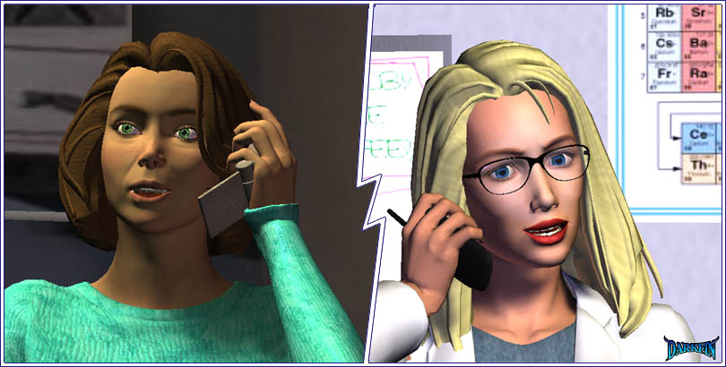
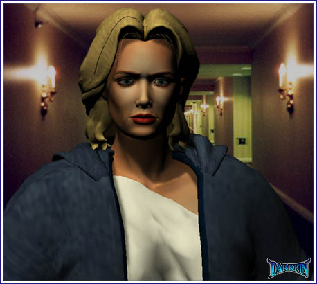
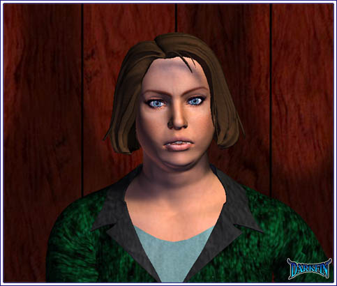
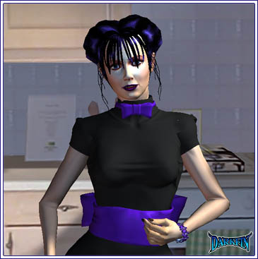
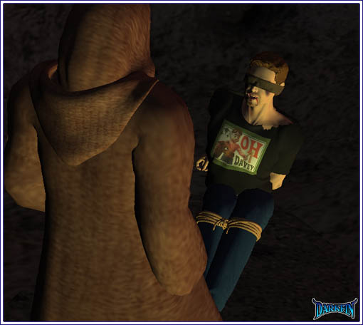

Erika This is most definitely anemone based but there is a secondary agent that I just cannot isolate... where have I seen this before?
Erika Remember the code - one ring, followed by three...
Morrigan Hello?
Erika How are you doing?
Morrigan Hi... better I guess - how are you doing?
Morrigan I know, stupid question - I only asked because... because you looked really sick when you left here

Erika Don't worry about me
Morrigan Someone has to
Erika Stephanie is helping out
Morrigan Right
Erika I'm still working on the toxin
Morrigan Any luck?
Erika Luck isn't what I need right now
Morrigan OK
Erika Look, I apologize for being brusque, I'm rather tired at the moment
Morrigan Hey, I'm impressed that you even used the word brusque
Erika How's my father?
Morrigan Oh, right, your dad - he seems pretty much the same, no drastic swings in his vitals
Erika Good - has he been lucid at all?
Morrigan No, I haven't even seen him open his eyes
Erika Is his temperature still at 101.6?
Morrigan (Checking something) Yep, it's been hovering around that level for the last hour
Erika Is Big Joe still with you?
Morrigan The front desk needed him - he's very freaked by the whole thing
Erika Aren't we all?
Morrigan But I think he'll come through - he's bringing me back something from the kitchen soon
Erika When he does, please ask him for some ice - wrap it in some towels and place it under my father's feet and hands - it should help
Morrigan I'll do that
Erika Dr. Gates will check in on you two later tonight
Morrigan What about you? - aren't you going to come over?
Erika Once I find out what we're dealing with
Morrigan You will, I know it
Erika Um, I should get back to work then - I'll see you later
Morrigan Um... how's KJ doing?
Erika I haven't seen him
Morrigan Joe told me that he's trying to hold it all together
Erika For the sake of the company, I hope he does
Morrigan Joe also told me that Ona Rosa was over at the house
Erika And so were a lot of other people - you only need to worry about yourself and my father right now
Morrigan Fine - but you can't stop me for worrying about you... 'bye
Erika Dammit, what is going on? - one problem at a time, please
Shelby Girl, there is no problem in this room that is more important than being at home with your kin right now
Erika What are you doing here, Shel? - I thought Calvin had a t-ball game?
Shelby He is with a sitter because I was at YOUR HOUSE and that is exactly where you should be!
Erika I will later - I need to finish this
Shelby HORSE APPLES
Erika Please, I can't get into this with you
Shelby Help me understand what is going on in that crazy blonde head of yours
Erika Maybe this is how I deal with loss?
Shelby And maybe I'll sprout wings and become a ballerina
Shelby (Noticing the red patch) Precious Miss, what in the world is going on with your skin?
Erika Nerves
Shelby (Trying to get a closer look) It looks like something the CDC needs to see
Erika Enough with the drama, Shelby, I've had more than enough lately
Shelby It's more than just welts, those look like scales!
Erika It's dry skin irritated by a rash caused from nerves and you're not helping!
Shelby Sorry child - I have some lotion in my bag but it looks like you'll need more than a squirt or two
Erika If you really... really want to help me, I could use your advice on the slide under the electron microscope
Shelby (Taking a look) About time you asked for some assistance, did it maim you to do so?
Erika Let me know if you reach the same conclusions about the levels
Shelby You know, I know you don't get along with Pauline but your mother seriously needs you right now
Erika (Checking some beakers) She has KJ
Shelby She needs her daughter, more than ever - she not only lost her husband but the father of her children
Erika You can't isolate it either?
Shelby Not yet but I know who would be the perfect person to ask
Erika (Nearly jumping out of her skin) Who?
Shelby Sandy - yes, I saw him working on something like this the other day
Javier (Revealing himself) Ladies, did I hear my name mentioned?
Joe (Muttering under his breath) This is wrong, all wrong
Chef Did you need more parsley?
Joe I have to stop this before it gets out of hand
Chef Are you alright, Mr. T?
Joe NO - I REFUSE TO LISTEN
Morrigan Crap, it's gone up to 102 - I wonder what's keeping Joe?
Morrigan Mr. von Meer?
Karl Sr. (Weakly) Are... are you safe?
Morrigan We're both safe... for now - how are you feeling? - is there anything I can get you?
Karl Sr. I'm so... so proud of you
Morrigan Uh, I'm not Erika... I'm Morrigan - your daughter will be here later
Karl Sr. I'm proud... of both of you
Morrigan What do you mean?
Karl Sr. There's... more to come... so much more
Morrigan Mr. von Meer? - Karl? - where in the hell are you, Joe?
Morrigan I need to get that ice!
Morrigan It's only down the hall... it's only down the hall
Morrigan DUH, it's on the floor BELOW this one - of course - why must I always suck at numbers?
Morrigan You would think a place like this could afford ice in every freaking room
Morrigan (To herself) STOP IT, you are just being paranoid
Morrigan Filet O'Fish, is that you playing hide 'n seek?
Morrigan NOT YOU CREEPS AGAIN
Morrigan (Holding her key card up for defense) WHAT DO YOU WANT FROM ME?
Morrigan AMY?

Amethyst They have him
Griffin That went much better than I had expected... so, what are your thoughts, Kage?
KJ I think I need a beer
Griffin This is a moment of glory - it should be toasted with a bottle of the best champagne
KJ I'm still trying to grasp what we are celebrating
Griffin It will make more sense when you study the files and I expect you to stay late and do so
KJ Man, I need to go home... be with my family
Griffin THIS is how you can be there for them - right now, we're on schedule and everything is going smoothly for once
KJ My father just died and now you're talking about some magic mystery metal that's going to revolutionize the world?
Griffin It's going to turn the almighty oil cartels into yesterday's news
KJ Do we need to destroy a mountain rage and the bay floor to get to it?
Griffin A hill here, some fish there - in the overall scheme of things, it's called progress
KJ (Rubbing his head) I really need that beer
Victoria Don't forget, Grif, father expected you to call him as soon as the meeting finished
Griffin (Scowling) Yes, I am aware of that... I'll be right back
Victoria How are you doing, junior?
KJ I'm trying to find the words right now
Victoria I'm so sorry about Karl
KJ Thanks
Victoria Need a beer?
KJ Oh yeah
Victoria Let's go get one
KJ First, could you please explain to me how and when all of this happened and how we... how you got caught up in it?
Victoria We'll need more than one beer
KJ I mean, you of all people, Vic - you're as tough as my sister when it comes to the environment, I certainly did not expect to find you at this meeting
Victoria (Looking down the hall) Believe me, this is the last place I want to be
Victoria (Barely above a whisper) Do you remember the Duquesa Bay legends? - and I'm not just talking about the romantic one involving the beheaded monk and his royal mistress...

KJ Sort of
Victoria Well then, forget Griffin's files for now - I highly recommend you go back and reread the history of this area
KJ Don't you think I have enough to do besides chase after fables?
Victoria Keep an open mind
Victoria I honestly did not want you to get tangled up in this greedy web of havoc - I didn't want my brother or Meeramar or our families involved... but we no longer have a choice
KJ What do you mean we don't have a choice? - we always have a choice!
Victoria Not this time, KJ
KJ That's bullshit
Victoria Listen, my preferred piece of advice to you is to run... to run as far and as fast as you can get - believe me, I tried, but I also know what's coming and there's no way to get away from it
KJ Jesus, Vic, you're making it sound like the freaking Death Star is upon us - sorry, Yoda, I need to go home to my family and crack open a cold one
Victoria And that's exactly why I stayed in this - to protect MY family
KJ From what?
Victoria With your father gone, you need to sprout a large hairy pair of your own - watch your back, watch your mother's back - and especially... your sister's!
Pauline (Clutching a bible) Thank you for being here, Liddie
Lydia (Clutching her crutch) I flew back the minute I heard what happened
Penny (Under her breath) Not because your own daughter was nearly killed in an earthquake
Lydia I'm sorry, sweetie?
Penny Nothing... can I get you some water, Mrs. von Meer?
Pauline Thank you, Penelope, it's nice to know I can count on you when I can't even count on my own children
Penny (Getting up) Yeah
Penny You'd get a better high off of a Sharpie
Stephanie Oh, Penelope - you startled me!
Penny Sorry, I had to come down for some water... and some air
Stephanie You don't... you don't do that with pens, do you?
Penny Relax, doc - I learned my lesson eating paste as a child
Penny That was a joke
Stephanie This is not really the time for jokes
Penny Maybe it is - I know the biggest joke of all is going on upstairs with Rikka's ma humping her bible like it's going to bring back her dead husband or something

Stephanie Maybe it brings her comfort
Penny Like when was the last time she was in a church? - when was the last time she did something for someone else that wasn't self-serving?
Stephanie That's not the point
Penny Of course not, hypocrisy never is!
Stephanie Are we talking about Erika's mom... or yours?
Penny Heh, might as well throw them all in the same pool... of course, we'd have to put floaties on my mother, first
Stephanie Such a cynical young girl
Penny I like "jaded realist hottie" better - when a big scary problem comes along, I don't go running back to childhood, desperately clinging to myths to solve my problems for me because I'm too stupid to think for myself - for Pauline, it's the New Testament, for my mom, it's Cinderella... what's your pick, Auntie Steph?
Stephanie I don't have a pick
Penny See? - you're a woman of science, you know better
Stephanie Science doesn't solve everything
Penny It solves enough
Stephanie (Thinking out loud) You have his exact same habit
Penny Excuse me?
Stephanie Oh... um, a man I know does the same thing - hums to himself when he's upset
Penny What makes you think I'm upset?
Stephanie A mother can always tell
Penny (Snapping open a bottle of water) Heh, that's not what Brad told me
Stephanie What does that mean?
Penny It means we have some issues with our so-called families
Stephanie Young lady, you are very fortunate compared to a lot of other girls your age who are simply struggling to survive
Penny I know, believe me, I know - I feel the pain of the universe the very second I open my eyes
Stephanie No, Penelope, you know the pain of your sheltered existence being challenged by unfair circumstances
Stephanie I am sorry about your mother's condition and I know the situation with your father is less than ideal but they are here for you and they both love you dearly... surely even you can see that?
Lydia Penelope?
Penny Yo, what up?
Lydia Stop talking like you're black, you weren't raised in a ghetto - are you bringing the water or not?
Penny It's on the way
Lydia Please hurry, Pauline is parched
Penny Ooh, alliteration
Penny Be careful where you're walking, mom!
Lydia Yes, dear
Penny (Looking back at Stephanie) You know, the absolute best and worst day of my life is yet to come - when mom finally dies, it will be a huge burden lifted off of my shoulders...
Stephanie But?
Penny But I don't want her to leave me
Stephanie Your mother's love will always be with you, no matter what
Penny Maybe I don't want to leave her?
Stephanie It's a natural part of life... to leave
Penny (Lumbering up the stairs with the water) Yep, so I've noticed
Morrigan (Whispering) You haven't said two words since we left the inn, are you going to explain to me what's going on?
Amethyst I can't
Morrigan Try
Amethyst I don't have enough time
Morrigan My foot is starting to hurt again
Amethyst That's to be expected
Morrigan Why are you dressed like one of them?
Amethyst Shh... we're almost there
Morrigan (Shocked) Zach
Zach (Struggling against the ropes) C'mon, people, no one told me what the safe word was - I'm all for a few rope tricks, I even got some cowboy chaps in the closet but this is ridiculous - my circulation is cutting off!

Morrigan Apparently, not to his mouth
Morrigan Great, it's that supreme jerkoff again - so, what's your plan besides trading me in for Eyes?
Morrigan Amy... Amy?